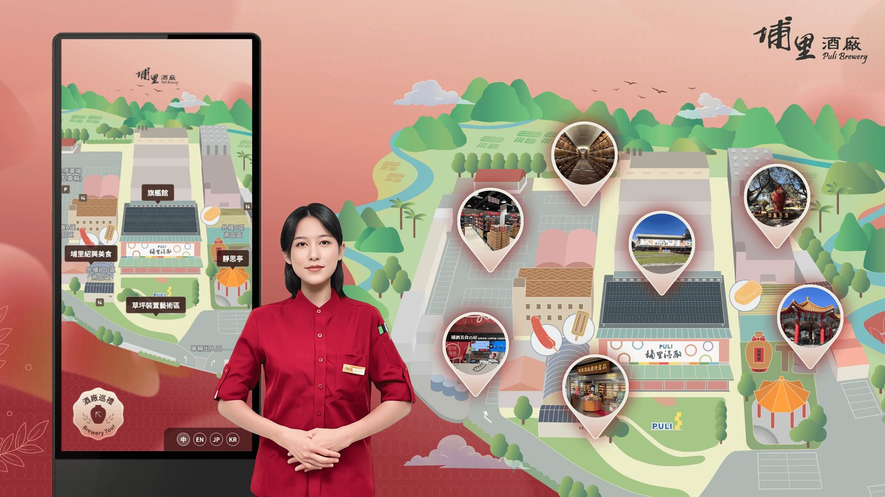
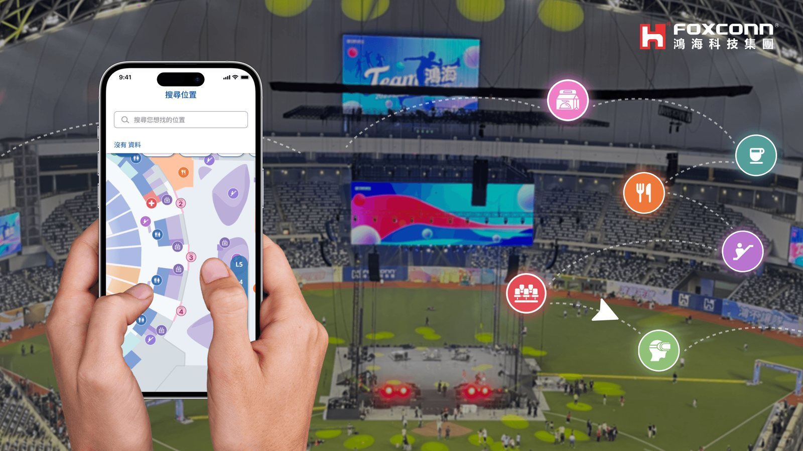
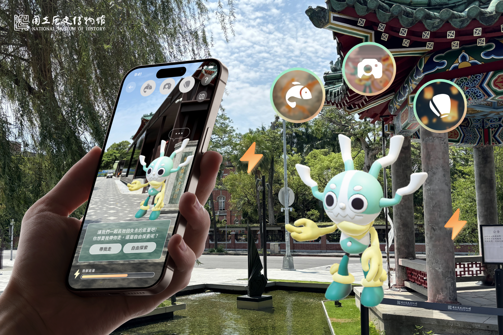

Selected Exhibitions · Spatial Navigations & Digital Architectures
Selected Exhibitions.

CULTURAL TECH · AI · 2024—2025
埔里酒廠
埔里酒廠
AI 導覽建置系統
Puli Brewery AI Tour System
百年酒廠腹地廣闊，旅客橫跨自由行、團體與散客三種情境。我建立一套跨裝置設計系統，用同一套視覺語言與元件規範統一手機、Kiosk、QR Code 三種裝置入口，串接 13 個景點與 AR／360° 環景，並支援中英日韓四語系，90 個工作天內完成上線。
VIEW CASE STUDY ↗
WAYFINDING · LARGE-SCALE · 2025
2025鴻海嘉年華
2025鴻海嘉年華
活動導覽系統
Foxconn Carnival Navigation
大巨蛋 7 樓層動線交錯，3.5 萬名員工與眷屬（含長輩、孩童）需要能快速上手的導覽 App。我以無障礙導航為核心，建立部門顏色分區系統與共用元件規範，並讓 App 與網頁版維持一致的導航介面，把複雜的場館資訊架構轉譯成一眼可辨識的視覺語言。
VIEW CASE STUDY ↗

AR EXPERIENCE · MUSEUM TECH · 2024
國立歷史博物館
國立歷史博物館
AR 探索體驗
National Museum of History AR
史博館希望重新開館後的戶外庭院不只是動線空間，還能讓親子與年輕族群願意停留，同時不能破壞館內文物原有的莊重氛圍。我設計 4 款 AR 互動關卡與 6 個隱藏探索點，並將新體驗整合進館方既有 App 的功能模組，而非另開一支獨立應用。
VIEW CASE STUDY ↗
EVENT DESIGN · BRAND EXTENSION · 2023
麻吉城市樂園
麻吉城市樂園
活動網頁設計
Gomaji City Park Campaign
GOMAJI 品牌重塑後首次推出的城市嘉年華，網站得在 3 週內同時完成兩個任務：把全新品牌識別介紹給既有會員，並把購票導購轉換做起來。我用單頁式捲動設計整合活動資訊與售票入口，最終優惠券核銷率達 80%。
VIEW CASE STUDY ↗